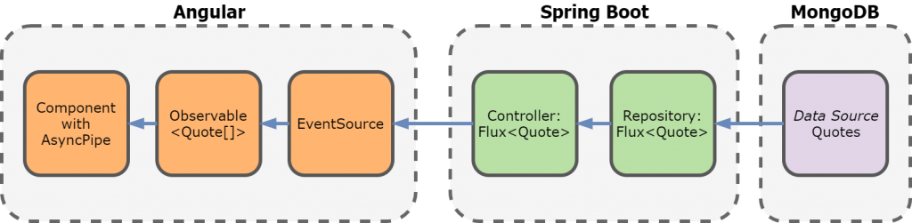

To showcase the reactive capabilities, a client web application receives quotes from the book Don Quixote stored in a MongoDB instance.
Instead of just asking for the quotes using a standard blocking call (REST call), you’ll open a Server-Sent Events channel.
The backend application will send these events once there is a subscriber (our client application).
